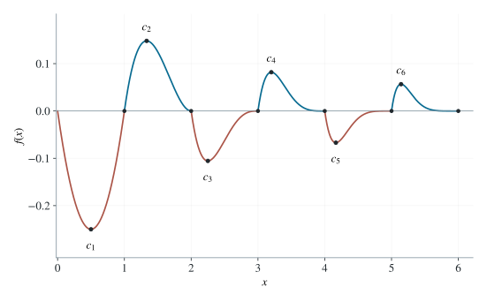
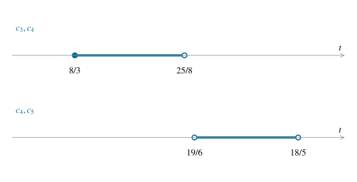

2.1 统一每一段的表达式
在第 n 个单位区间令 u=x−n+1，则 0<u≤1，且
f(x)=(−1)nu(1−u)n. （1）当 0<u<1 时，奇数段为负、偶数段为正；每个正整数处函数值为零。段内没有其他零点，因此全部零点恰为 1,2,3,…。
当 x→n− 时，第 n 段的 u→1−，故 u(1−u)n→0；当 x→n+ 时，第 n+1 段的局部变量 x−n→0+，函数值也趋于零。
这两个极限都等于 f(n)=0，所以接点连续。接点左侧符号是 (−1)n，右侧符号是 (−1)n+1，任意小邻域内同时有正值和负值；因此接点既不是极大值点，也不是极小值点。
2.2 检查选项 A
若 x∈(n−1,n]，则 x+1∈(n,n+1]，两处换元得到同一个 u。于是
f(x)f(x+1)=−u2(1−u)2n+1≤0. （2）端点 u=1 时也成立。故 A 正确。
2.3 完整计算选项 B 的参数范围
设 (t,2t) 中最小的整数为 j。恰有两个整数意味着它们为 j,j+1，同时 j−1 不在区间内、j+2 也不在区间内。由于区间两端均不包含，条件准确地写为
j−1≤t<j,j+1<2t≤j+2. （3）由于 j 是区间内最小整数，左端必须位于 j−1 与 j 之间；允许 t=j−1，因为开端点会排除 j−1，却必须 t<j 才能保留 j。
右侧同理：须 2t>j+1 才保留第二个整数，而 2t≤j+2 才排除第三个整数。因而参数是两个区间 [j−1,j) 与 (2j+1,2j+2] 的交集。
例如 j=2 时交集为 [1,2)∩(23,2]=(23,2)；j=3 时为 [2,3)∩(2,25]=(2,25]；j=4 时为 [3,4)∩(25,3]={3}。全部结果为：
j1234j≥5允许的 t∅(23,2)(2,25]{3}∅ （4）最后一行可直接验证：j−1≤2j+2 要求 j≤4。故取值集合为
(23,2)∪(2,25]∪{3}. （5）例如 t=2 时 (2,4) 中仅有整数 3，却属于 B 所给的区间。又 t=3 时 (3,6) 中恰有 4,5。因此 B 错误。
2.4 求出全部极值点及其函数值
在开段 (n−1,n) 内，dxdu=1。对 u(1−u)n 使用乘积法则，第一项的导数贡献 (1−u)n；第二项由链式法则贡献 −nu(1−u)n−1。提取公因子 (1−u)n−1，括号内为 (1−u)−nu=1−(n+1)u，所以：
f′(x)=(−1)n(1−u)n−1(1−(n+1)u). （6）因子 (1−u)n−1 在段内严格为正，导数仅在 u=n+11 处变号。因此每段恰有一个极值点，横坐标及函数值为
cn=n−1+n+11=n+1n2,f(cn)=(−1)n(n+1)n+1nn. （7）奇数段在 cn 处极小，偶数段在 cn 处极大；第 1 步已排除了整数接点，故没有遗漏。并且 cn∈(n−1,n)，从而 cn 严格递增。

函数前六段的图像。整数是零点，段内标出的 cn 是全部极值点。
2.5 用偶数段峰值检验 C
C 的量词是：存在一对固定的 a,x0>0，使它们对所有 x>x0 同时适用。要否定它，需对任意给定的 a,x0 找到一个更靠右的点，使 f(x)≥e−ax。奇数段函数为负，不会违反正的指数上界，所以选偶数段的峰值点 cn 来检验。
对偶数 n，由第（7）式以及 ln(1+s)<s（s>0），有 (1+n1)n<e，因此
f(cn)=n+11(1+n1)−n>e(n+1)1. （8）这里对数不等式也可直接证明：s−ln(1+s) 在 s=0 为零，其导数为 1+ss>0。
任给 a>0，因 cn>n−1，
e−acnf(cn)>e(n+1)ea(n−1)⟶+∞. （9）具体地，令 H(t)=a(t−1)−1−ln(t+1)。取 N 足够大，使 N+11≤2a。
对所有 t≥N，有 H′(t)=a−t+11≥2a。积分得 H(t)−H(N)≥(2a)(t−N)，右侧趋于正无穷，所以 H(t)→+∞。
指数还原后，式（9）的下界趋于正无穷；限制在偶数 n 上也成立。
于是无论选择怎样的 a,x0>0，都能取足够大的偶数 n，使 cn>x0 且 f(cn)>e−acn。故 C 错误。峰值趋于零，并不意味着具有统一的指数衰减上界。
2.6 把 D 化为有序点列的窗口计数
记 L=2t−4、U=t+1。在 2≤t<5 内，0≤L<U<6。前几个极值点为
c1=21, c2=34, c3=49, c4=516, c5=625, c6=736, c7=849>6. （10）若窗口恰含 cj,cj+1，这两点必须连续；排除左右邻点并保留这两点，得到
cj−1≤L<cj,cj+1<U≤cj+2. （11）在 j=1 时约定 c0=0，仅用于表示已有的 L≥0，并不把零当作定义域内的极值点。代入 L,U，上式等价于
2cj−1+4≤t<2cj+4,cj+1−1<t≤cj+2−1. （12）再与 [2,5) 求交，得到全部可能：
窗口内的极值点c1,c2c2,c3c3,c4c4,c5c5,c6t 的范围∅∅[38,825)(619,518)∅ （13）第一行要求 t≤c3−1=45，与 t≥2 冲突。第二行同时要求 t≥49 和 t≤511。第五行同时要求 t>729 和 t<1249，也不可能。
第三行的四个界分别为 t≥38、t<825、t>511、t≤619。
其中较强下界是 38>511，较强上界是 825<619，有效交集为 [38,825)。
第四行对应 j=4，四个界为 t≥825、t<518、t>619、t≤729。
因为 619>825 且 518<729，其交集为 (619,518)。这些界都已落在 [2,5) 内。
因 c7>6>U，不会再有右侧的其他连续对。

使窗口恰含两个极值点的参数区间。实心端点包含，空心端点不包含。
故 D 正确，最终应选 A、D。尤其 t=38 时，c2=L 被排除而 c3,c4 在内，因此该端点必须保留；另三个端点均使目标两点之一落到边界，故须排除。